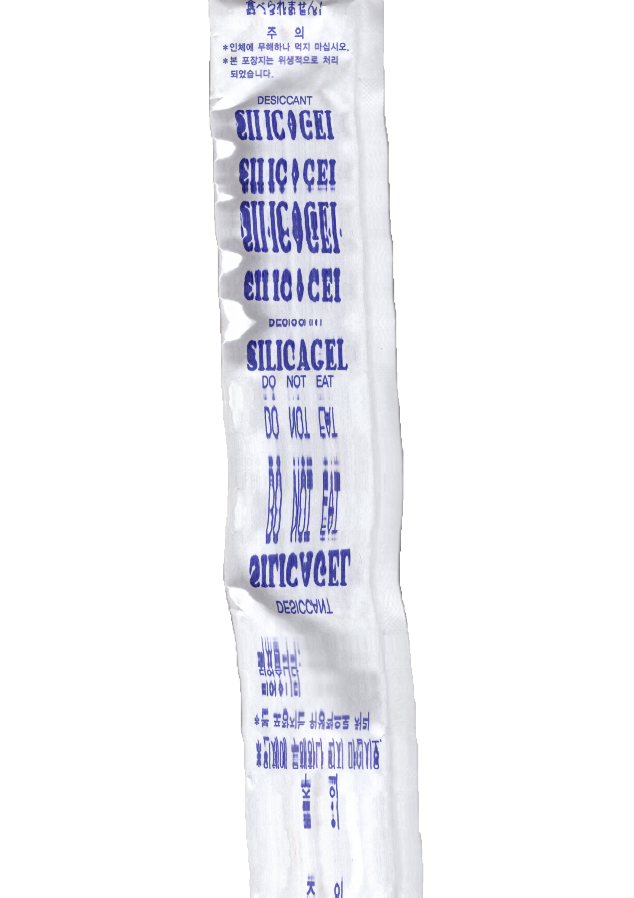
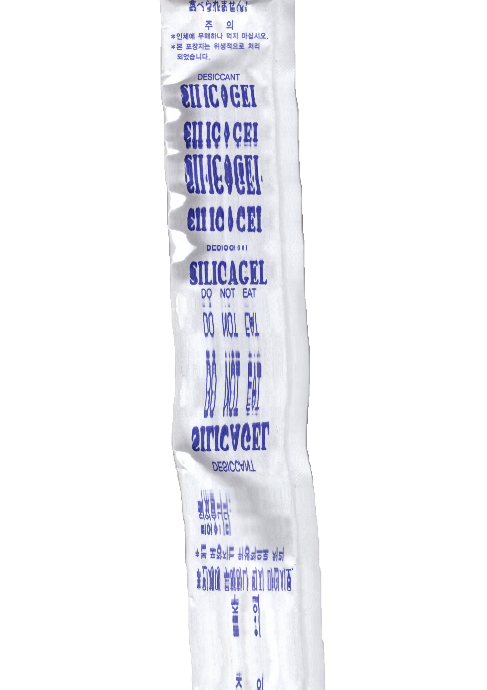
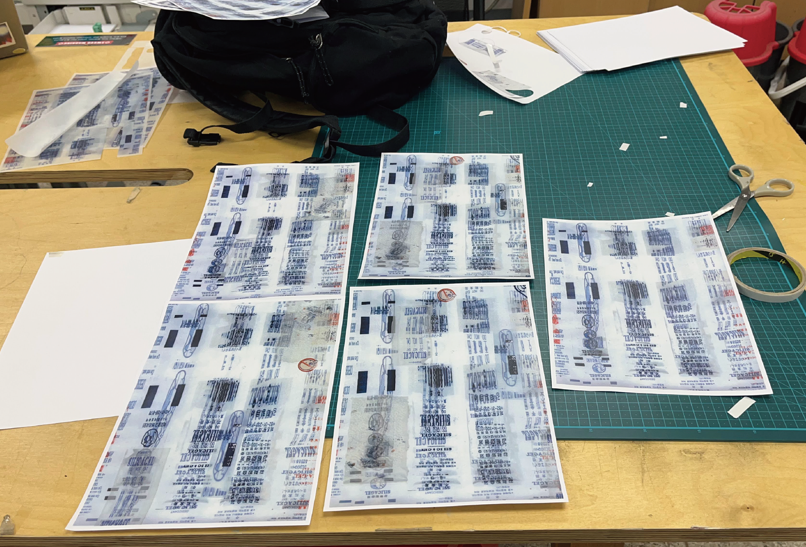
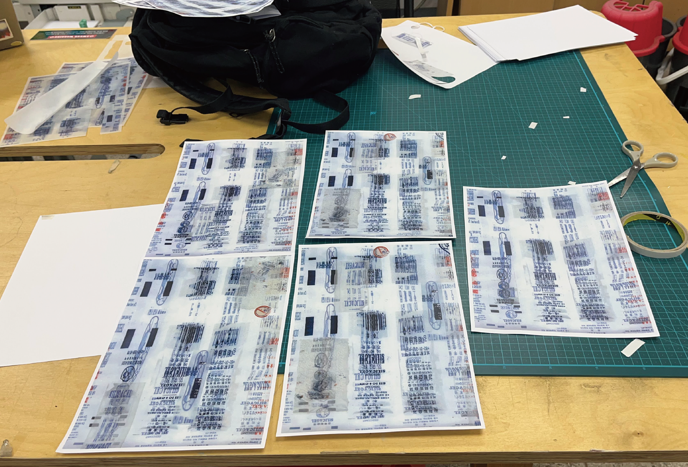

2023
[personal collection project poster : Silica gel]
594 * 841
‘수집’을 주제로 진행한 포스터 제작 프로젝트입니다.
이 프로젝트에서는 방부제를 재료로 삼아 다양한 그래픽 실험을 통해 포스터를 제작했습니다.
다양한 형태와 색을 가진 방부제들을 수집한 뒤,
촬영, 스캔, 인쇄, 재인쇄의 과정을 반복하여
레이어를 쌓아 올리는 방식으로 포스터를 완성했습니다.
해당 작업물은 2차 디지털 가공이 이루어지지 않았으며
스캔과 재인쇄 등 1차 이미지 가공만으로 완성된 포스터입니다.
 


 

my design experiments~(´ہ｀)ノ
main graphic¸¸♪
work process(˘ᗜ˘)
scan silica gel